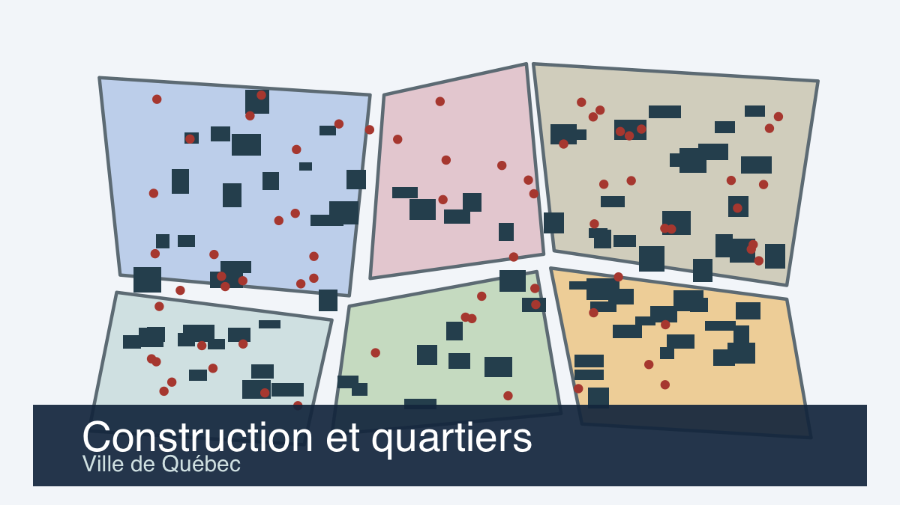

Construction, bâtiments et quartiers à la Ville de Québec
Aménagement du territoire · Ville de Québec, Données Québec
Intermédiaire Ville de Québec
Idée en classe
Comparer le nombre de permis délivrés par quartier.
Potentiel pédagogique